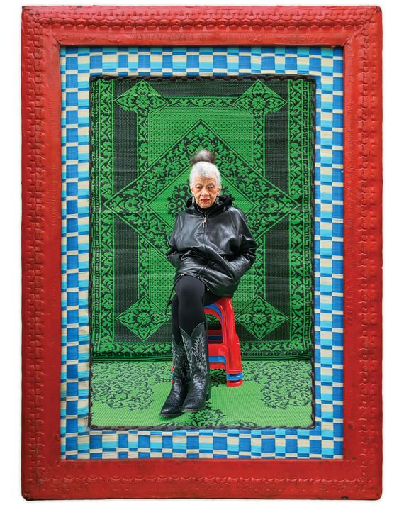

Artist Lorraine O’Grady Finally Has the World’s Attention
More than four decades into her trailblazing career, Lorraine O’Grady finally has the world’s attention.
On a very hot day in September 1983, the artist Lorraine O’Grady dressed in all white, pinned a pair of white gloves to her shirt, and joined the annual African American Day Parade in Harlem. The other participants were marching bands, Black community groups, and brands; O’Grady had entered her own float, an empty nine-by-15-foot gold-painted wooden picture frame that she’d built with friends and mounted upright on a flatbed. As it made its way along Adam Clayton Powell Jr. Boulevard, the frame captured the people and sights on both sides of the street within its gilded bounds. O’Grady had hired 15 young Black performers who walked and danced alongside it, carrying smaller golden frames that they held up before members of the crowd. Big black letters on either side of the flatbed proclaimed ART IS …
O’Grady, then 48, had decided to become an artist just six years before, after two marriages, an attempt at a novel, and stints as a translator and rock critic. She was still finding her footing, running up against both a white art world that ignored and dismissed Black artists and a Black one that, she felt, was sometimes too eager to play it safe. The float was a conceptual statement, a rebuttal to a Black social-worker acquaintance who’d told her, “Avant-garde art doesn’t have anything to do with Black people!” As Art Is … rolled by, Black paradegoers smiled and posed and mugged for the frames held up by O’Grady’s performers, shouting,
“That’s right! That’s what art is. We’re the art!”
“I’ve never had a more exhilarating and completely undigested experience in my life,” she later wrote.
O’Grady hadn’t publicized Art Is … , telling just a handful of peers about it; there was no review, no public feedback aside from what she got from participants. “I thought no one had noticed,” she told an art historian many years later. It wasn’t until the late aughts that she would pull out of storage hundreds of slides taken by friends and onlookers at the parade and turn 40 of them into an installation. Once it caught curators’ attention, Art Is … would become one of her best-known works, helping to cement her belated status as a trailblazer. It only took decades.
O’Grady is now 86, a warm and intellectually formidable presence. Dressing almost exclusively in black — often in a leather jacket and tight pants or leggings that hug her thin form — she wears chunky silver jewelry and favors red lipstick. She usually styles her dark curly hair up and forward in a kind of punk-inflected Afro (although the pandemic has forced it into a gray-and-white ponytail). She tends to lean toward you when she speaks, sliding smoothly between two levels of conversation: an accessible one, punctuated by her infectious laugh, and a more rarefied zone. She’s equally given to long, sometimes meandering stories and profoundly succinct expressions of complex ideas.
This is as true in public conversations as in private ones. Speaking at a 2015 conference at the National Museum of Women in the Arts, wearing a rubber gorilla mask as part of the anonymous feminist activist group the Guerrilla Girls, she delivered an earnest seven-minute dissection of the phrase “women and artists of color” and the way it leaves out people who are both. At the end, she quipped: “This problem is defeating us, and, I mean, it defeats me, because any time I try to get a language, it just doesn’t work on a poster!”
O’Grady has made art using collage, performance, photo installation, and video. She has written criticism and curated shows. She has studied Egyptology and European modernism. Through every medium and subject, she has built a body of work that asserts two key ideas: the centrality of Black women and their stories and the ways in which hybridity — of people, cultures, ideas — has shaped the modern Western world. These are also the central themes of her life, as a Black middle-class Caribbean American woman who has never fit neatly into prescribed categories. “I always felt that nobody knew my story, but if there wasn’t room for my story, then it wasn’t my problem,” she said. “It was theirs.”
Now the artist is the most visible she’s ever been — a situation that she’s still getting used to. In November, Duke University Press published a collection of her texts, Writing in Space, 1973–2019, and the Brooklyn Museum is set to open her first-ever retrospective, “Lorraine O’Grady: Both/And,” on March 5. It not only gathers art from her entire career but also marks the debut of her first new performance persona since the early ’80s.
O’Grady and I have known each other since 2014, when she reached out to thank me for a blog post I’d written about her. When we logged on to Zoom on a recent Friday night, she was sitting at a desk in her apartment in Westbeth — a Manhattan artists’-housing complex where she has lived since 1976 — that currently doubles as her home and office. She was in a narrow hallway between her tiny kitchen — I spotted an abundance of books, vitamin bottles, and Tupperware — and her “bedroom,” a makeshift nook with a bed wedged between a filing cabinet and two bookcases. (“This is terrible, isn’t it?” she joked.) She was more subdued than the last time I’d seen her, a few years ago. She’d been pulling a lot of all-nighters lately in order to work on the new performance, the book, and the retrospective. Still, her lower energy appeared to be about more than just exhaustion; she seemed circumspect about “making it” at 86.
“The current moment is a strange one, because you can’t say nothing has changed, but you can’t say that anything significant has changed,” she said. “ ‘The Other’ has remained safely bracketed as ‘the Other.’ ” If more Black artists — and, crucially, Black women artists — are showing and selling their work now than ever before, they’re still mostly working within systems that were originally designed to exclude them. The new recognition is exciting. It also throws into relief the decades spent without it. What does it mean for an artist like O’Grady, who has spent her career as a gate-crasher, to finally be welcomed in?
Photo: Hassan Hajjaj for New York Magazine. Photo assistance by Martei Korley.
Lorraine’s parents, Lena and Edwin O’Grady, were both born in Jamaica, but they met at a cricket match in Boston in the 1920s. Lorraine was born on September 21, 1934, 11 years after her older sister, Devonia. The girls grew up first on an Irish immigrant block, then a Jewish one; the little West Indian community they were part of was centered on an Episcopal church. Lena and Edwin had both come from well-educated upper- and middle-class families in Jamaica, but upon arrival in the U.S., they’d been forced into working-class jobs.
Boston was a heavily white city at the time, and O’Grady said her class-conscious parents didn’t relate to many of the African Americans there, including upper-class Black Bostonians. “They felt that they were looked down on,” she said. “They had different styles, different tastes, different everything. They couldn’t bridge the gap, and they didn’t want to, actually — I think it was self-defense.” Still, she remembers that when her mother spoke to other members of the exclusive Black women’s social club she’d joined, she tried to disguise her Jamaican accent. “It would drive me nuts,” O’Grady said, “to see her contorting herself. I liked the way she talked.”
O’Grady has said her parents adhered to “British colonial values.” This meant, in part, that she received a rigorous education that would lead her to Wellesley College, which she attended on scholarship and where she was one of only a few Black women to enroll. Her studies were briefly interrupted when, in 1953, near the end of her sophomore year, she married a man she’d met through one of her former classmates — a star athlete at Tufts — and had a son with him. O’Grady managed to finish school, deciding to “get practical” and switch her major from Spanish literature to economics. She went to work as a research economist and intelligence analyst for the federal government, but the stability she’d been seeking never came.
“I had several days when I woke up and said to myself, Nobody here is ever gonna know who I am, and I have to find a way to say who I am, ” she said. So she quit her job. Her marriage had recently ended. Then her sister, Devonia, died, at the age of 38. It was the early ’60s, and O’Grady was in a moment of deep personal crisis. She left her young son with his father — a decision she still struggles with today, although they have since worked on their relationship and become closer — cashed in her retirement savings, and went to Europe, looking for a way to say who she was.
She wouldn’t find the right way to do it for years. By the late ’70s, she’d started (then abandoned) a novel, started (but not finished) studies at the Iowa Writers’ Workshop, married (and then separated from) a filmmaker she met at Iowa, took over a successful translation business in Chicago, and moved to New York, where she kept writing, this time rock criticism for The Village Voice and Rolling Stone. Then she got a job as an adjunct instructor at the School of Visual Arts. The art world, she realized, was one she didn’t know anything about. She went looking for books to learn more. She picked up one by the critic Lucy Lippard about conceptual art. “I had read art books before, but they hadn’t hit me,” she said. This one she read cover to cover. “I knew at the end of reading it that this was something I could do and be good at.”
Not long after that, she had a breast-cancer scare; when her biopsy came back negative, she decided to make a newspaper collage as a present for her doctor, on whom she had a crush (taking inspiration from the Surrealist André Breton, whose work she taught at SVA). She began looking through the Sunday New York Times and found herself cutting out phrases for a poem instead. When she completed it, she thought it was too good to part with. For nearly six months thereafter, she created a work every Sunday, calling the project “Cutting Out the New York Times.” By the time she was done, she had become an artist. “The problem I always had was that no matter who I was with or what I did, I got bored pretty quickly,” said O’Grady. “This was something I knew I would never get bored with, because how can I get bored? I would always be learning, and I would never, ever master it. That was part of the appeal.”
Within a few years, she started hanging out at Just Above Midtown, a nonprofit gallery devoted to avant-garde African American art that Linda Goode Bryant had opened in 1974. O’Grady found her way in by volunteering there, which she now calls a “bougie thing to do — ‘Oh, I’ll lick stamps! I’ll lick envelopes if you want!’ ” She got to know Black artists for the first time in her life, people like David Hammons, Senga Nengudi, Maren Hassinger, and Dawoud Bey. It was a community of support and possibility. “The condition of my life until I came to New York and joined Just Above Midtown was that no matter where I went, I was always going to be the only Black person in the room,” O’Grady said.
Still, even among the JAM artists, she didn’t feel entirely seen; her life experience wasn’t considered a “typical” Black American narrative. Her family didn’t come from the South and hadn’t experienced American slavery; she’d grown up more class than race conscious. O’Grady has said that before she entered the art world, she considered herself “post-Black.” Coming face-to-face with racial discrimination, she embraced her Blackness — but she still identified, and continues to, as a Caribbean American, rather than as African American. “It was difficult, even in the New York art world, to mention a connection to the Caribbean without feeling as if I were somehow claiming superiority,” she told an interviewer for her Brooklyn Museum catalogue. “But what if those are the problems you are dealing with?”
Rather than shrinking from this difference, O’Grady mined it for her work. In 1980, she had originally planned to attend her 25th reunion at Wellesley. Instead, she debuted a performance persona that would allow her to both enter and critique the art world at the same time: Mlle Bourgeoise Noire, otherwise known as Miss Black Middle-Class, of Boston. This avatar came to O’Grady one day as she was walking through Union Square. The artist imagined her as the winner of an international beauty pageant held in Cayenne, French Guiana, in 1955. She was, perhaps, a version of O’Grady that might have existed in an alternate reality.
One night in June, when JAM had an opening, O’Grady showed up unannounced (to everyone except Goode Bryant) wearing a crown, sash, and gown and cape she had made out of 180 pairs of white gloves, acquired from thrift stores around the city. Accompanied by her brother-in-law playing her master of ceremonies, O’Grady as Mlle Bourgeoise Noire circulated among the guests, smiling as she passed out white chrysanthemums. When she’d given them all away, she donned a pair of above-the-elbow white gloves and began to whip herself with a white cat-o’-nine-tails, before shouting a short poem that ended with the line “Black art must take more risks!!!” Then she left.
“When she told me about Mlle Bourgeoise Noire and that she wanted to do this, I wondered to myself, Will she take creative risk?” recalled Goode Bryant. “That night answered it. That took so much courage.” Goode Bryant explained that although people in the crowd knew O’Grady, they’d never seen her art and didn’t necessarily anticipate something so radical from the woman who’d been writing the gallery’s press releases. “I don’t know that I expected she would be so stark in her reveal of the layers and contradictions,” Goode Bryant said. “I knew she was on her way at that point.”
The following year, O’Grady crashed another opening in the same fashion, this time for a New Museum show that featured nine white contemporary artists who adopted personae in their work. The museum had invited O’Grady to participate in an education program but not to show her own art. (Even that offer was rescinded after her guerrilla performance.) “I was furious at the segregation and the assumptions that the white art world made every day without even thinking about it,” O’Grady said. “But nobody was really saying anything. Everybody was still trying to play nice. I hadn’t been established — I had nothing to lose.” Mlle Bourgeoise Noire became her instrument for calling out the segregation of the New York art scene. Within the next two years, she organized an exhibition that featured 14 white and 14 Black artists, as well as the Art Is … performance, under the guise of the character.
“The thing that feels so distinctive about Lorraine is she confounds so many different people’s expectations,” said Zoé Whitley, who has curated the artist’s work and is now the director of London’s Chisenhale Gallery. When O’Grady was starting out, Whitley said, she faced a dearth of models and options — especially as a Black woman making performance art, which was relatively new and considered by many to be a white genre. She “was really pushing boundaries in terms of gender and race and class or even what art mediums she should adopt,” Whitley said. “She didn’t ask anyone for permission or wait for that to be granted; she accorded that power to herself.”
Not all of O’Grady’s early work was so confrontational. In 1982, she staged Rivers, First Draft, or The Woman in Red, an ensemble piece with 17 participants, in Central Park. Starring O’Grady as the titular character, the performance loosely told the story of her navigating the antagonisms of the art world to find her voice as an artist against the backdrop of her Caribbean and New England roots. It was less of a straightforward narrative than what O’Grady called “a collage in space”: Three versions of her at different ages appeared separately and simultaneously, moving through different sequences and actions until, at the end, they united and walked together through a stream. “I would say that the Mlle Bourgeoise Noire project, those pieces were not the core of my work,” she told me. “The core was this other work that combined self-exploration with cultural critique.”
That quality grew more pronounced over time as she abandoned performance and moved her work to the wall. Her first solo show, at INTAR gallery in midtown in 1991, featured a group of photomontages now collectively titled “Body Is the Ground of My Experience.” These surreal, playful, and sometimes dark pieces, such as The Fir-Palm, which shows a composite tree springing from a Black woman’s navel, posit Black women’s bodies as a kind of ground zero for Western culture — a subject O’Grady continued to investigate the following year with “Olympia’s Maid.” Referencing the Black woman in Manet’s 1863 painting Olympia, this groundbreaking essay asserted the need for Black women to reclaim their subjectivity. One line perfectly sums up her ethos: “Critiquing them does not show who you are: it cannot turn you from an object into a subject of history.”
Soon after, O’Grady would add a postscript: Western culture is structured by binaries and a logic of either-or — good versus evil, black versus white — that create supremacies. The solution is to embrace the concept of “both/and,” the coexistence of supposed opposites. Plurality and hybridity as the norm. “Look, I’m not somebody who tries to say we’re all the same. The differences are real,” O’Grady told me. “The problem isn’t the differences. The problem is the hierarchization of the differences.”
The idea of “both/and” has manifested most clearly in her use of diptychs — for instance, placing images of the ancient Egyptian queen Nefertiti next to photographs of her sister in the work Miscegenated Family Album; between them, there is an implied connection, a gap, and a tension. It’s also there in the multiplicity of a piece like Rivers, the duality of both gazing outward and in, and in O’Grady herself, a product of several heritages, “living on a hyphen,” as she put it. It informs her overall approach, which is to treat everything as unfixed.
O’Grady was constantly refining her ideas, but she still wasn’t finding the audience she wanted. Even her solo exhibition hadn’t been received as she’d hoped: Operation Desert Storm started the week before it opened, gluing New Yorkers to their TVs. The show was important to her, said O’Grady, “but it was like a stone dropping into the middle of the ocean.”